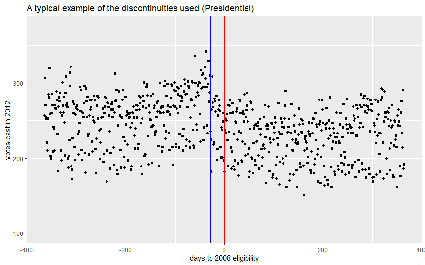
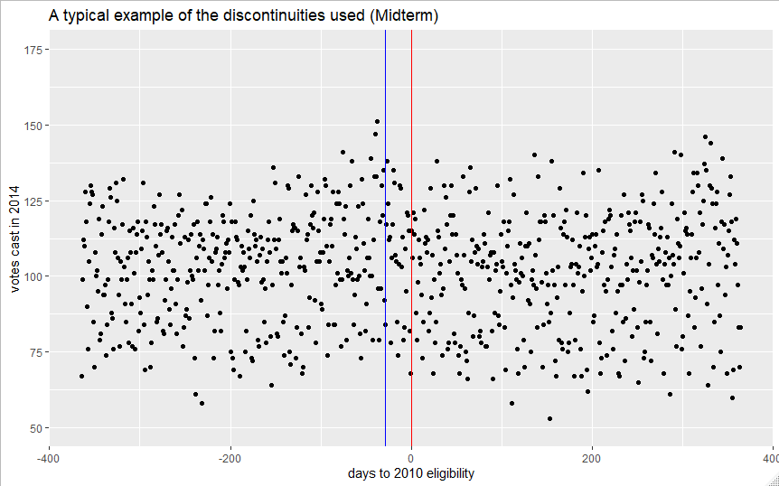
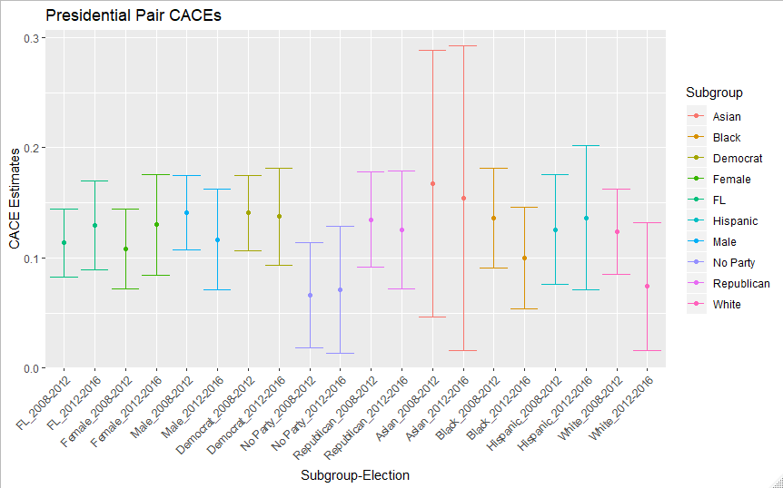
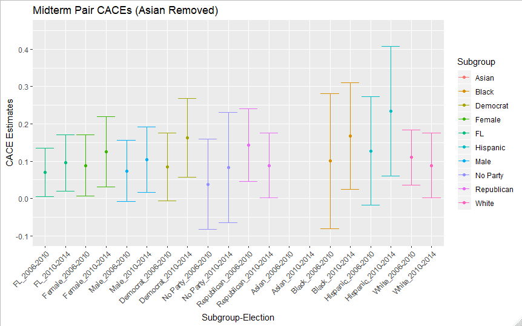
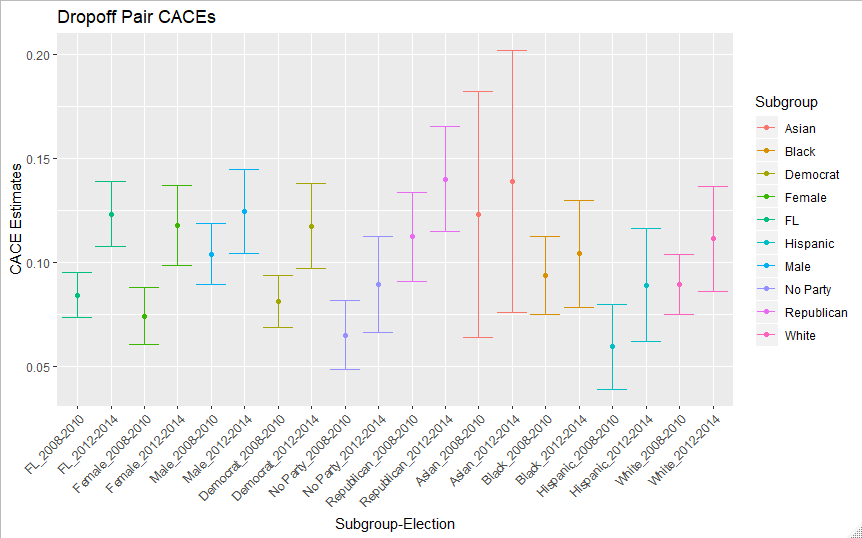
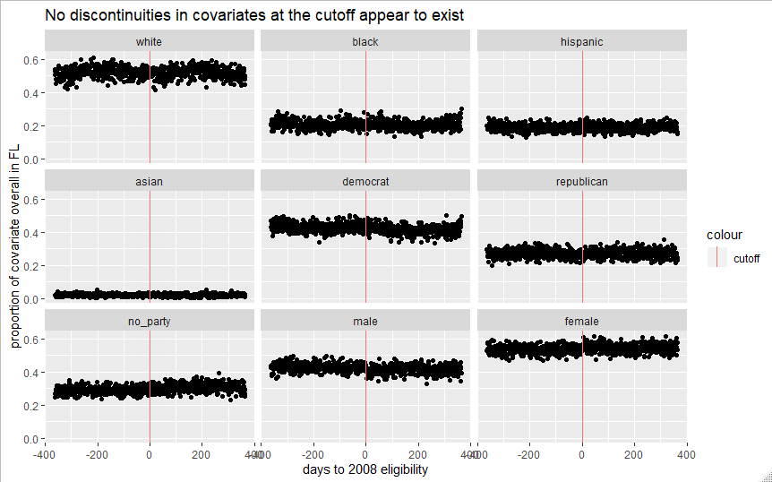

This is a draft of a paper I wrote in grad school on whether formation of voting habits exhibits any heterogeneity by race, party, or gender, using data from the Florida voter file. Putting it online since I’ve shown the draft to a few folks at this point and someone mentioned it’d be nice to have it publicly available.
TL;DR: It doesn’t seem like there is any strong heterogeneity by race, party, or gender in voting habit formation, although there’s some evidence that non-affiliated voters might form habits less readily. This is encouraging as a Democrat; if our folks struggled to form voting habits easily, the task of expanding the electorate would be much harder. Due to the complexity of methods needed to study this problem, I have a considerable amount of uncertainty over both the true effect sizes of habit formation and the “causes of effects” - whether what’s happening is really habit1.
Happy to share replication materials if asked, just reach out (the data is too large for github).
Abstract
In this paper, I provide a first test of whether voting habit formation exhibits heterogeneity by race, gender, or party affiliation. To do this, I leverage data from the 2018 Florida voter file, leveraging the fuzzy discontinuity in votes cast created in downstream elections by some young adults being “just 18” or just ineligible in a given upstream election. While prior work claims the instrument created by this discontinuity would be too weak to usefully study demographic heterogeneity, I show it is similarly precise to numerous estimates interpreted in prior work. From this analysis, two main findings emerge despite the considerable limitations of the instruments. First, there don’t appear to be major differences in CACEs by race or by gender in Florida compliers across different election types. Second, there is some suggestion that non-party affiliated compliers have slightly lower CACEs than their major party-affiliated peers in presidential election pairs, although the mechanism for this is unclear. The additional covariates also facilitate additional robustness checks compared to earlier work, and my results are robust to a wide variety of alternative specifications, although they are sensitive to shifts in bandwidth.
Motivation
Is voting habit forming? If so, for whom, and in what types of elections? Political scientists have long agreed that individual differences in voter turnout appear to persist over time, and that voting in prior elections is the most predictive characteristic of those who vote in future elections (e.g: Fraga, 2019; Hersh, 2015; Gerber et al., 2003; Rosenstone and Hansen, 1993; Verba & Nie, 1972). There is also strong observational support for the idea that those who vote early on in life tend to continue on a path of voting more frequently than those who were absent in such early elections. For example, Franklin and Hobolt (2011) have found that there is strong variation in European voters’ subsequent turnout dependent on whether they first became eligible to vote in a European Parliament (lower turnout and salience) or national (higher turnout and salience) election. Both the consistency with which voting predicts voting and the meaningfully stronger voting trajectory of those who vote early in life heavily suggest a habit effect, but stop short of finding a causal link. As an example of a common alternative explanation, perhaps individuals who develop frequent voting habits simply have inherent interest in politics, which drives their involvement.
If we believe that there may be a habit effect on voting in an initial in future elections, how can we estimate a causal effect? Of course, we cannot use a randomized experiment: we cannot ethically randomize some citizens to vote, or more concerningly, randomize some citizens to not do so. The body of literature on this causal question is much smaller, and began to develop in earnest only 15 years ago. The main observational strategies used to estimate such causal effects involve instrumental variable approaches, utilizing randomized experiments in the “upstream” election which attempt to mobilize voters in the treatment group as an instrument to estimate the Complier Average Causal Effect (CACE) in subsequent “downstream” elections. For example, Bedolla and Michelson (2012), utilizing a series of experiments that aimed to improve turnout in minority voters in California, find overall that voting in the upstream election results in a 23-percentage point increase in probability to vote in subsequent elections for compliers. However, these designs are frequently limited by somewhat weak instruments and low overall sample sizes, as increasing turnout through campaign intervention is extremely difficult and expensive per voter reached, especially in non-white and younger populations (Gerber & Green, 2012; Fraga, 2019).
The weakness of these instruments has prompted the development of another major identification strategy, using fuzzy regression discontinuity (FRD) designs, leveraging the fact that being just barely 18 or just too young to vote on the upstream election day should set voters on very different voting trajectories if such a habit effect exists. The pioneering paper in this vein is Meredith (2009), which leverages the full California voter file as a dataset. Meredith argues that while the turnout effect of being “just 18” in the upstream election is likely smaller than most campaign interventions, the opportunity to work with a total of 20 million voters generates many more compliers overall than small upstream experiments can reasonably could expect to. Stepping back, both of these estimation strategies only study and make causal inferences about narrow slices of the broader population we’d like to understand. In an ideal world, research would allow us to understand the habit formation of all citizens eligible to vote, and give us rich and actionable knowledge about any heterogeneity in habit formation by demographic or geographic characteristics. Instead, both designs have tended to focus on registered voters in states with richer data in their voter files. In the case of the upstream-experiment-as-IV studies, this is because the papers often leverage earlier papers in experimental political science. These papers usually prefer to target voters because the voter file provides a natural list of potential targets whose turnout can then be easily be tracked after the experiment (Gerber & Green, 2012). Also, turnout effects of campaign-style interventions tend to be much higher for registered voters than the unregistered ineligible, likely due to both individual differences between voters and non-voters and the additional complications of needing to register as well as vote (Gerber et al, 2003). Thus, in order to use the upstream-experiment-as-IV paradigm to explore behavior of the broader eligible voter population, researchers would have to invest in extremely large scale and high treatment effect interventions in order to have a strong enough instrument for downstream estimation. Given sufficient investment, however, this strategy could feasibly allow for the estimation of CACEs for any subpopulation where a reasonable number of compliers can be created. The FRD design approach faces a slightly different set of problems with regards to potential populations of causal inference. First, the design unavoidably only can study voters- the voter file only tracks registered voters, and no equivalent file exists for the unregistered. Second, the CACE is only identified right at the cutoff- that is, the causal impact of being precisely old enough to vote on election day in the upstream election. There is no guarantee that we can extrapolate these estimates to the broader and more theoretically interesting population of all 18-year olds who are eligible to vote. Finally, in thinking about the problem of possible heterogeneous treatment effects, few states provide both the birthdate field needed as the cutoff and demographic information in their voter files, whereas it is possible to gather that information during many experimental treatments.
More recent work like Dinas (2012) and Coppock & Green (2016) has been concerned with heterogeneity in habit forming across election types and states. Both papers find that habits tend to form most strongly across similar types of elections- for instance primary voting causing future primary voting. Coppock & Green, using data from all 15 states whose voter files are sufficient for the FRD design, find significant variability in state habit formation, although they are uncertain of the mechanisms underlying this. Heterogeneity by demographic characteristics has been a longtime aspiration of this body of literature, which has been stymied by the weakness of both campaign and the “just eligible to vote” interventions as instruments. Coppock & Green end their 2016 paper on the note that precise estimates of such heterogeneity will likely require new experiments of ambitious scale, and that this must be the future direction of voting habit research. While I agree that any fine-grained variation will likely require such an approach to explore, I will argue there is still some capacity to explore heterogeneous habit formation remaining in the voter file approach.
In this paper, I provide a first test of whether CACE estimates exhibit heterogeneity by a variety of demographic characteristics. To do this, I leverage data from the 2018 Florida voter file, in a fashion similar to Coppock and Green (2016). Unlike Coppock and Green, however, I retain and use 9 additional demographic covariates from the voter file concerning gender, party affiliation, and race. From this analysis, two main findings emerge despite the limitations of the instruments. First, there don’t appear to be major differences in CACEs by race or by gender in Florida compliers across different election types. Second, there is some suggestion that non-party affiliated (sometimes known as independent2) compliers have slightly lower CACEs than their major party-affiliated peers in presidential election pairs, although the mechanism for this could be either parties turning out their voters or features of the independent compliers themselves. The additional covariates also facilitate additional robustness checks compared to earlier work, and my results are robust to a wide variety of alternative specifications, although they are sensitive to shifts in bandwidth.
Data and Descriptive Statistics
I work with the June 2018 release of the Florida voter file, a uniquely demographically rich voter file. States are required by the Help America Vote Act to make available to the public individual level data on every registered voter in their state, although states vary considerably in how much information about each voter they provide (Hersh, 2015). Given that Coppock & Green (2016) were able to work with 15 states, it might be concerning that I am only working with one. The authors work with all states where the information needed to estimate the discontinuity are available, specifically birth date and voting eligibility (to rule out felons and other ineligible, formerly registered citizens). Of these 15 states, however, only Florida is one of the nine states that include mandatory, self-supplied racial information in their voter file. Thus, while other states could be used for examining heterogeneity across party identification or gender, only Florida allows us to look at all three groups of demographic variables. I chose to work with the 2018 data (giving results back to 2006) for two reasons: first, given the file only includes 10 years of historical voting data, this leaves more overlap with Coppock & Green’s data gathered in 2013 for crosschecking results. Second, the 2010-2020 voting history data would at this point only include 2 presidential elections, whereas my selection includes 2008, 2012, and 2016, allowing for the estimation of 2 separate CACEs by pairs of presidential years.
There were two major steps in cleaning this data. First, I removed all voters who requested a public records exemption. These are voters who have a legal reason to have their information hidden from the public, for example domestic violence survivors or those who have restraining orders filed against others. Accepted exemptions still have their voting history listed, but all demographic and geographic information is lost, thus rendering the redacted data unhelpful for my purposes. I also checked for any seemingly impossible votes cast (for example, voting underage), but in this edition of the file no such problems appeared to occur compared to earlier editions of the file.
Second, I group the roughly 13 million Florida voters by birthdate cohort, calculating summaries of each cohort’s voting behavior and demographic characteristics. These are then filtered to the 1.9 million voters who turned 18 or almost did in the last 10 years. This grouping sidesteps the potential problems arising from the fact the voter file only includes people registered to vote. While there is not a complete list of just eligible and just ineligible 17 and 18-year olds, through this cohort grouping, we can work with the upstream/downstream votes cast by cohorts above and below the eligibility threshold instead. Unfortunately, this also adds some additional complexity to interpreting results, as most potential violations of the fuzzy regression discontinuity design assumptions would occur at the individual level. As noted earlier, this also narrows the population of causal inference: we can only reason about registered voter compliers, not the broader adult population. Unlike earlier work, I also compute the proportion of each race, gender, and party in each cohort, which both allow for examining heterogeneity and act as additional controls in estimation. A last question of data quality that might be concerning is a possibility of attrition, or of movement across states between election pairs. If, for instance, voters move out of Florida, but are not removed from the voter file, they would appear not to vote in subsequent elections, biasing the CACEs downward. Alternatively, voters might move into Florida but not correctly have their prior state’s voting history brought with them to the Florida file. Coppock & Green explored this question extensively in their appendix, using a private vendor’s data on net inflows and outflows of voters between states. Their overall conclusion is that the net change in the Florida voting population is small, and that even their more extreme estimates of net change to the voter file would not bias the CACE estimates much. While I do not have access to their vendor’s data, and thus am not able to show that net inflow remained the same between 2013 and 2018, I can think of little reason Florida would experience a large change in it’s young adult voting population between those years due to movement between states. More broadly, this concern also applies to upstream-experiment-as-IV designs, as almost all of these use the voter file first as a list of people to target, and second as a way to check voting history (and thus experiment effect sizes) after the fact. Unfortunately, as Coppock & Green show, the potential bias from this depends on a complicated interaction of whether inflow or outflow is higher, and the voting histories of those who leave. All of this makes it hard to predict if final CACE estimates are biased up or down in total, if such an effect were to exist.
Below in table 1 is a demographic profile of the sample after the filtering to those who turned 18 in the last 10 years. First, we can see that there are a large number of total votes cast, making it plausible that a sufficient number of compliers exist for somewhat precise estimates. It is fortunate that Florida is simultaneously the third most populous state in the United States, and has rich demographic data as well. As expected, presidential years have much higher turnout. I can combine the different year totals for a variety of different estimates: two presidential to presidential year estimates, 2 midterm to midterm year estimates, and 2 presidential to midterm year estimates. Each of these have theoretical value, as they represent different types of habit formation as I will discuss later. Also, the proportion of each demographic group can help calibrate our expectations around precision of estimates. With Asians being 2% of this population, it’s unrealistic to expect particularly precise estimates for them, but we should be able to make more headway for the other racial, gender, and party groups.
| variable | proportion or count |
|---|---|
| female | 53.01% |
| male | 42.35% |
| unknown gender | 4.61% |
| white | 52.83% |
| black | 19.17% |
| hispanic | 18.86% |
| asian | 2.07% |
| other race | 7.07% |
| democrat | 40.36% |
| republican | 28.06% |
| no party | 30.86% |
| other party | 0.73% |
| voted 2006 | 65,754 |
| voted 2008 | 501,582 |
| voted 2010 | 202,207 |
| voted 2012 | 878,111 |
| voted 2014 | 468,721 |
| voted 2016 | 1,467,375 |
My outcome of interest is the number of votes cast in the downstream election, for example, the 2012 presidential general election. The “treatment” is having voted in the upstream presidential election, for example the 2008 election. The instrument is eligibility to participate in (for example) the 2008 election, which is determined by being 18 on election day, not 18 by the registration deadline as is sometimes commonly believed. The forcing variable is simply the cohort’s number of days above or below turning 18 on the upstream election day- a negative number in the field indicates the number of days older than 18 they are, whereas a positive number indicates the days remaining to turn 18. Finally, to account for seasonal and day of the week birth trends which subsequently influence total votes cast by each cohort, like Coppock and Green I include a lagged downstream vote total for the birthdate cohort one year younger. This is particularly important for this estimation strategy given that the several month period just before election day tends to have the most children born each year (Mulligan, 2012).
As a final descriptive presentation below in figure 1 and 2 are two example plots of the 60 discontinuities I leverage. In both plots, overall downstream votes cast appear slightly higher for those who were just eligible, although the trend is much clearer in the 2008-2012 example. This is a good first illustration of the potential of the design. The red line indicates the actual eligibility cutoff. As I will discuss later in the robustness section, there seems to be some indication that young Floridians are confused about the difference between being 18 by election day (red line), and being 18 by the last day to register to vote for the general election (blue line). This is partially the failure of the Florida Division of Elections, as their online materials don’t explain the distinction well. This may also explain why my results are sensitive to variation in bandwidth- a sharp change in behavior appears to occur 29 days before the actual eligibility deadline as well.


Estimand
Given this data, we can estimate a Complier Average Causal Effect (CACE). Define D to be the number of votes cast in the upstream election, and Y to be votes in the downstream election. As a reminder, one cannot assign Y, one can only leverage the encouragement to do so created by being just eligible, which I label Z ∈ [0,1], with 0 being too young, and 1 being old enough to vote in 2008 respectively. The forcing variable, days above or below being old enough to vote in 2008, I label T. Lagged refers to lagged downstream vote total for the birthdate cohort one year older, used to eliminate other temporal trends. For individual birthdate cohorts, I use subscript i’s.
The estimand is thus:
\lim _{T \downarrow 0} \sum_1^N\left[Y_i \mid D_{1 i}=1\right]-\lim _{T \uparrow 0} \sum_1^N\left[Y_i \mid D_{1 i}=0\right]
This is the additional number of votes in the downstream year we would expect across cohorts if all voters did vote in the upstream one, beyond the number if each cohort’s subjects had not voted in the upstream, among only the compliers, subjects who vote if and only if they receive the “encouragement” of being eligible in the upstream. This CACE is identified only at the cutoff, which as discussed above considerably restricts our ability to generalize these findings to the full voting or even young voter population. Following Coppock and Green, I present these as expected proportions of increase, ie .06 or 6% increase in upstream turnout, as this makes it easier to compare to earlier work. This must be restricted to compliers only because they are the only group in our analysis whose behavior changes just above or below being 18 on election day. For example, the encouragement provided by becoming eligible does not influence the behavior of “never takers”, those who would never vote. Our encouragement cannot create a difference in votes cast for this group or any other that is not the compliers: being just above or below the eligibility threshold only potentially alters the observed outcome of the compliers.
Methods
I use linear 2 stage least squares (2SLS) regressions to estimate these CACEs:
\begin{aligned} & D=\alpha_0+\alpha_1 Z+\alpha_2 T+\alpha_3 T * Z+\alpha_4 \text { Lagged }+ \text { Controls }+\varepsilon(1) \\ & Y=\beta_0+\beta_1 D+\beta_2 T+\beta_3 T * D+\beta_4 \text { Lagged }+ \text { Controls }+\varepsilon(2)\end{aligned}
With our fuzzy regression discontinuity estimate of the CACE as β_1. T is centered at 0, removing the need to complicate this definition by including the interaction term. I have 9 different control variables for each birthdate cohort, which can be thought of as divided into three blocks: gender (% female/% male), race (% White, %Black, %Asian, %Hispanic), and party (% Democrat,% Republican,% No Party Affiliation). When estimating a subset CACE that is part of a block, I do not include any control variables from that block. For instance, with the data subset to only Hispanics to estimate the Hispanic CACEs, % White, Black, and Asian are all 0, and thus excluded. My main results are estimated with a 365-day bandwidth around the upstream election and using first order polynomials, as suggested by bandwidth selection algorithms (Imbens & Kalyanaraman, 2009). In the robustness checks section, I describe how varying choices of bandwidth and controls influence these estimates.
I estimate 60 different CACEs in total. I have 2 estimates for each of type of election pair (presidential-presidential, midterm-midterm, and presidential-midterm), which I then estimate for 10 different subsets: one for each of the 9 controls, plus the overall Florida estimate as a point of comparison. These are carried out with the AER R package for estimation, and using the rdrobust R package for access to bandwidth selection algorithms. All code is available in the appendix.
Assumptions
In order for the fuzzy regression discontinuity design to correctly identify and estimate the CACE, 5 different assumptions must be met. I discuss each in turn.
Exclusion: Is there any path other than through D through which the “treatment” of being just eligible in the upstream election could affect propensity to vote in the downstream election? Absent a history of actually participating, it is unlikely that someone who becomes eligible slightly earlier would be more likely to be targeted by a campaign to turn out. We can, however, imagine a subject who knew they would be eligible paying more attention in the upstream contest than someone who knew they would not be, which could spark more interest by the subsequent election. Similarly, a subject who missed voting in their first presidential election but was eligible might be more motivated in the downstream election for a fear of missing out again (“I missed voting for Obama, but won’t do so again”). With all such paths that imagine a more engaged citizen for their first presidential election, however, one has to imagine that most such citizens would want to put that energy towards voting in the first election. Thus, while we have no way to rule out such backdoor paths from being just eligible the upstream election to voting in the downstream, we have to imagine such cases would be relatively rare.
Effectiveness of the Instrument: While just being eligible alone likely has a relatively weak effect on subsequent turnout, given that we are working at the scale of a full state voter file, we can be confident we have generated a reasonable number of compliers to at least detect strong effects for many subsets.
Monotonicity: A defier in this design would be someone who votes despite not quite being old enough, or vice versa. Given that this constitutes a felony, and a hard to commit one with little benefit, we can be extremely confident in this form of the assumption. Alternatively, someone could choose to not vote only if just eligible, which again implies an extremely unlikely stance towards election law.
Ignorability: Here, we need to be clear that we mean ignorability within some cutoff of being just eligible, given our covariates: Y(1),Y(0) ⊥Z | x,x ϵ (C-a,C+a). It seems plausible that being a month above or below 18 on election day shouldn’t create any other major changes in a 17 or 18 year old’s potential outcomes. However, as we get farther from the eligibility threshold it becomes more plausible that the groups could diverge through, for example, differences in maturity or differences in education due to birthdate.
Cutoff and forcing variable determined independently: It seems unlikely that either Election Day or someone’s recorded birthday could be moved to help a subject vote earlier. Federal Election Day has been fixed in the United States since 1945. Further, it seems exceedingly unlikely that a parent or hospital administrator would attempt to modify a birth certificate simply to allow their child to vote 1 year earlier.
Estimation: As we saw in the plots above, there seems to be little non-linear trend in Y above or below the cutoff, simplifying modeling E[Y|X]. Also, while there might be some concern with day of the week, seasonal, or other temporal trends in the number of dates on a given birthdate and thus the number of expected votes there, including the year lagged variable should arguably be sufficient to model them, provided any trends aren’t particularly unique to 1990 births. Compared to prior work, my 9 controls make it much easier to believe that we can model E[Y|X] precisely.
SUTVA: Lastly, there is little reason to believe that the encouragement to vote provided to one subject by turning 18 close to election day could influence another subject. While we can imagine students influencing each other’s politics, it seems implausible that a friend turning 18 close to election day alone could change a student’s propensity to vote meaningfully.
Outside of the questions of strength of instrument which I discuss next in detail, most of these assumptions don’t seem to face any major violations that we should be particularly worried about.
Instrument Effectiveness
Given that strength of instruments is a major concern in this body of research, and given prior work has posited CACEs from subset estimation like I use would be too imprecise to really understand heterogeneity, it is important to give a precise characterization of my instrument’s strength. This can be easily done using just the first stage of my 2SLS estimates above, effectively presenting how many downstream votes we expect our instrument to generate for a variety of specifications. In table 2 below, the first estimate is the number of votes we believe to be generated by our instrument (the coefficient on α_1) for the 2008-2012 pair. Past work has been comfortable presenting this level of result as sufficiently precise. Next is the 2010-2014 pair, which prior work has also interpreted extensively. Restricting my data to blacks who are only 20% of the voting population is instructive- while fewer votes are of course generated, we can still expect an amount of precision in black presidential pairs similar to that in the full population in midterms. Hispanic voters show a similar trend given a similar share of the population, and white voter estimates will be even more precise as they are over half of Floridian voters. It is also important to show where this strategy breaks down- with the Asian (2% of population) subset, our estimates will be very imprecise, even for the presidential pair, and effectively useless for the midterms. Stepping back, given there is no prior knowledge about heterogeneity of CACEs by race, party, and gender, even these relatively coarse instruments are capable of showing any strong trends that exist, or ruling out ones that do not.
| Subgroup | Estimate | SE |
|---|---|---|
| All Florida, 2008-2012 | 37.14 | 5.02 |
| All Florida, 2010-2014 | 8.743 | 2.743 |
| Black, 2008-2012 | 9.674 | 1.44 |
| Black, 2010-2014 | 1.908 | 0.745 |
| Asian, 2008-2012 | 0.822 | 0.313 |
| Asian, 2010-2014 | 0.619 | 0.185 |
Results
To organize presenting this collection of CACEs, I group the estimates into the 3 types of election pairs for discussion, after which I step back to interpret trends across them.
Below in Figure 3 and Table 3 are presidential-presidential pair CACEs, along with standard errors and 95% confidence intervals. These represent the most precise estimates I am able to produce, as the largest number of votes are cast in presidential elections, thus generating the largest number of compliers to work with. As a first validation of these estimates, the 2008-2012 pair estimates for all of Florida are nearly identical to Coppock & Green’s estimates despite using more controls. The standard errors are somewhat smaller, however, as expected. Also consistent with prior research, all these estimates are consistently positive. Looking at the 2 pairs of estimates by gender, there doesn’t seem to be any heterogeneity I have the precision to detect. In the party estimates however, the non-party affiliated voters seem to see noticeably lower CACEs. With the 4 pairs of race estimates, we more strongly feel the limitations of such a weak instrument- the Asian estimates aren’t precise enough to inspire much confidence, but there’s no sign of massive racial disparity in habit forming. The lower CACE for non-party voters between presidential elections seems consistent with multiple findings in prior literature on both the general enthusiasm for voting of non-party affiliated voters (Leighley & Nagler, 2014), and campaigns strong preference to target registered members of their own party with turnout interventions in party registration states (Hersh, 2015). On the other hand, some prior work has theorized that significant racial disparities might exist in voting habit formation. For instance, Bedolla & Micheleson (2012) posited that minority groups might more weakly form voting habits than whites, making the overall CACE a combination of a higher white effect, and a lower non-white one. There is little evidence of such a pattern in my estimates- if one did exist, it would have to be quite small to be consistent with my results. Thus, even with imprecise estimates, we have made some headway in answering theoretical questions around heterogeneity of voting habit.

| Subset | 2008-2012 Est | 2008-2012 SE | 2012-2016 Est | 2012-2016 SE |
|---|---|---|---|---|
| FL | 0.114 | 0.016 | 0.129 | 0.021 |
| White | 0.124 | 0.020 | 0.074 | 0.030 |
| Black | 0.136 | 0.023 | 0.100 | 0.024 |
| Asian | 0.168 | 0.062 | 0.154 | 0.071 |
| Hispanic | 0.126 | 0.025 | 0.136 | 0.033 |
| Democrat | 0.141 | 0.017 | 0.137 | 0.023 |
| Republican | 0.135 | 0.022 | 0.125 | 0.027 |
| No Party | 0.066 | 0.024 | 0.071 | 0.029 |
| Male | 0.141 | 0.017 | 0.116 | 0.023 |
| Female | 0.108 | 0.019 | 0.130 | 0.023 |
Moving on to the Midterm CACEs in Figure 4 and Table 4, we lose precision due to the smaller number of compliers possible in a midterm election. Given Florida is a battleground state, and has been frequently considered the tipping point in past presidential elections, we could expect these estimates to reflect a much lower election spending estimate of habit formation. With so few Asian midterm voters, the confidence intervals of the estimates stretched as low as -.5 and as high as 1.1, the latter of which is an impossible value. They are thus removed from the graph to make the other numbers easier to interpret. Many of the confidence intervals no longer exclude zero, but the point estimates are still all positive. While there still isn’t much sign of a gender or racial disparity, there isn’t a gap in midterm CACEs for non-party affiliated voters that we have precision to detect.

| Subgroup | 2006-2010 Est | 2006-2010 SE | 2010-2014 Est | 2010-2014 SE |
|---|---|---|---|---|
| FL | 0.069 | 0.033 | 0.095 | 0.038 |
| White | 0.110 | 0.037 | 0.089 | 0.045 |
| Black | 0.100 | 0.093 | 0.167 | 0.073 |
| Asian | -0.225 | 0.206 | 0.666 | 0.213 |
| Hispanic | 0.127 | 0.074 | 0.234 | 0.089 |
| Democrat | 0.085 | 0.046 | 0.162 | 0.054 |
| Republican | 0.144 | 0.050 | 0.089 | 0.045 |
| No Party | 0.038 | 0.061 | 0.083 | 0.076 |
| Male | 0.074 | 0.042 | 0.104 | 0.045 |
| Female | 0.088 | 0.042 | 0.125 | 0.048 |
Lastly, in Figure 5 and table 5 below are the CACE estimates for the Presidential-Midterm pairs, or dropoff estimates. Given that the compliers are generated in a presidential election, but the electoral environment downstream is one of a midterm, we should expect these estimates to have precision closer to the first pair of estimates, but also reflect that the downstream votes occur in a lower salience midterm environment. While overall and race trends are similar to the last two graphs, there is again some suggestion of a slightly lower CACE for non-party affiliated voters in the dropoff pairs. Also, there is some suggestion that in the 2008-2010 pair, female CACES are much lower than male ones, although the pattern doesn’t repeat in 2012-2014, suggesting it may simply be a function of noise.

| Subgroup | 2008-2010 Est | 2008-2010 SE | 2012-2014 Est | 2012-2014 SE |
|---|---|---|---|---|
| FL | 0.084 | 0.006 | 0.123 | 0.008 |
| White | 0.089 | 0.007 | 0.111 | 0.013 |
| Black | 0.094 | 0.009 | 0.104 | 0.013 |
| Asian | 0.123 | 0.030 | 0.139 | 0.032 |
| Hispanic | 0.060 | 0.010 | 0.089 | 0.014 |
| Democrat | 0.081 | 0.006 | 0.118 | 0.011 |
| Republican | 0.112 | 0.011 | 0.140 | 0.013 |
| No Party | 0.065 | 0.008 | 0.089 | 0.012 |
| Male | 0.104 | 0.007 | 0.124 | 0.010 |
| Female | 0.074 | 0.007 | 0.118 | 0.010 |
Stepping back, the major trends here are limitations due to the instrument strength, lack of major disparities across gender or race, and some suggestion that non-party affiliated voters may form less habit than Democrats or Republicans.
Encouragingly, there don’t seem to be any large and persistent differences in habit formation by race or gender across all these types of elections. If minorities formed voting habit less than Whites, this would imply an even more severe uphill battle to close racial disparities in voting (Fraga, 2019). While I lack the ability to detect any fine-grained differences, even ruling out large racial or gender disparities is a novel contribution to the study of voting habit given the challenges this literature has faced around weak instruments. For example, if the overall Florida presidential CACE of .11 in the 2008-2012 was comprised of a .15 White CACE and .07 CACE for all other groups, my estimates would likely be precise enough to reflect that. Thus, while some researchers like Bedolla & Micheleson (2012) have posited deep racial disparities in other areas of voting behavior like turnout extend to voting habit formation, that happily doesn’t seem to be the case, at least for Floridian compliers influenced to vote by being just 18 on an upstream election day. It is also possible, of course, that these trends aren’t a reflection of pure habit, but instead are a result of the democratic party working to turn out non-whites, diminishing whatever non-campaign related habit pattern might exist.
By party, there does seem to be some suggestion that non-party affiliated voters CACEs are considerably lower than party-affiliated voters. Multiple theories of voting behavior could explain the variation in these estimates across different types of elections. For instance, perhaps the party-affiliated CACEs are higher in presidential pairs because of massive presidential campaign spending in downstream years. In midterm years, Florida is still a purple state, but we would not expect the same magnitude of party expenditure there, given that not every gubernatorial, senate, or congressional midterm election is strongly contested. This would shrink the partisan vs. non-partisan gap. On the other hand, this trend could simply be consistent with work like Leighley & Nagler (2014), which shows convincingly that non-party affiliated voters are less engaged and interested in politics. The dropoff estimates being more or less between the two other types does nothing to resolve this causes of effects debate. While the future of voting habit research may lie in large scale experiment-as-IV programs due to the challenges my work and prior work have face with our instrumental variables, working with Florida’s demographics-rich voter file data has provided a initial rough answer on what types of strong heterogeneity exists in voting habit formation.
Robustness Checks
Beyond allowing me to estimate heterogeneous CACEs, retaining more information from the Florida voter file than previous work allows me to explore a greater variety of robustness checks as well. In order, I discuss including or excluding control variables, bandwidth variation, jumps in any of the covariates at the discontinuity, and a falsification check leveraging the fact that some cohorts of voters turned 18 not in a federal election. Of these, only bandwidth raise any concern.
First, as a simple check of the robustness, one might wonder if inclusion of my 9 new controls significantly changes any of the CACE estimates I present. I compared my estimates presented in the results section against both the same estimates excluding the control blocks in equations (1) and (2), and my full FL estimates to those presented by Coppock and Green. In both cases, the point estimates moved little, although the standard errors were reduced slightly as expected. This result also lends some credibility to earlier work like Coppock & Green’s, and Dinas (2012)’s; if my estimates were sensitive to inclusion of controls, their work likely would be as well, calling into question the viability of the FRD estimation in states that don’t provide such rich demographic data. As suggested by Coppock & Green however, the major source of variation does seem to be temporal variation, which is accounted for with the lagged variable. Code carrying out these comparisons can be found in the appendix.
Bandwidth provides more of a concern for my estimates: while bandwidth selection algorithms suggest the full 365-day bandwidth presented regardless of metrics to optimize for, or polynomial used, the estimates shrink towards zero as smaller and smaller bandwidths around the upstream election are used to estimate the CACE. Across all possible metrics to optimize for, kernels, and up to order 3 polynomial, all bandwidth selection algorithms formulations I tried using the rdRobust R package agreed that using the full 365 bandwidth was the best choice. As an illustration of the shrinking CACEs across varying bandwidths, in table 6 I present the 2008-2012 (presidential) election pair CACE point estimates at 5 different possible bandwidths. While the unweighted average of these subset estimates is of course not substantively meaningful, I include it as an aid in seeing the trend. A similar pattern occurs for all the other 5 election pairs I estimate- a full matrix of such estimates for all elections (also including their SEs) is in the appendix.
| State | 365 | 180 | 90 | 60 | 30 |
|---|---|---|---|---|---|
| AR | 0.200 | 0.150 | 0.140 | 0.010 | 0.100 |
| CT | 0.160 | 0.140 | 0.140 | 0.110 | 0.110 |
| IA | 0.080 | 0.030 | 0.030 | -0.050 | -0.030 |
| IL | 0.080 | 0.050 | 0.020 | 0.010 | 0.040 |
| FL | 0.112 | 0.090 | 0.050 | 0.030 | -0.010 |
| KY | 0.080 | 0.080 | 0.050 | 0.050 | 0.080 |
| MO | 0.160 | 0.150 | 0.140 | 0.130 | 0.110 |
| MT | 0.110 | 0.080 | 0.030 | -0.010 | -0.080 |
| NJ | 0.150 | 0.120 | 0.090 | 0.030 | 0.010 |
| NV | 0.170 | 0.140 | 0.090 | 0.000 | -0.010 |
| NY | 0.070 | 0.020 | -0.030 | -0.060 | -0.030 |
| OK | 0.140 | 0.110 | 0.090 | 0.010 | 0.040 |
| OR | 0.110 | 0.070 | 0.060 | 0.010 | -0.070 |
| PA | 0.120 | 0.080 | 0.010 | -0.050 | -0.040 |
| RI | 0.110 | 0.140 | 0.050 | 0.030 | -0.150 |
| Average | 0.123 | 0.097 | 0.065 | 0.017 | 0.005 |
The distinction between what Coppock and Green present (precision-weighted overall CACEs across states) and my table 7 (varying bandwidth in their data for individual states) is crucial for comparing their cases to mine. It seems that all states Coppock and Green studied share this shrinkage pattern, even ones with higher quality election administration than Florida’s. Similarly, Bandwidth selection algorithms run on individual states in Coppock and Green’s data also support wide bandwidths as I found. And finally, most other states, when plotted, show a spike at where the registration deadline would typically be, around 30 days before election day. All this taken together, it seems likely all work leveraging this discontinuity has and will struggle with the odd combination of sensitivity to bandwidth, but bandwidth selection algorithms preferring use of all data. I chose to present 365 days in my primary results because the bandwidth selection algorithms suggested it, but have tried to provide enough information in this paper and the appendix that readers more convinced by a smaller bandwidth could understand the implications of such a belief on voting habit. Usually, when the CACE estimates shrink towards 0 as the bandwidth is reduced, that suggests that no true effect exists. However, given how consistently upstream-experiment-as-IV approaches have produced positive CACEs suggesting a habit effect, and given how prior voter file work has a similar pattern as the bandwidth shrinks, I believe the confusion around eligibility to vote or register is the most likely cause of this finding.
My additional demographic variables also allow me to show that no covariate jumps at this discontinuity. If for example, whites disproportionately had birthdays just before election day compared to other races, that might indicate that the CACE was a reflection of different demographic profiles on either side of the cutoff, rather than effect of becoming just 18 near an election as we intended. Looking at Figure 6 below, there doesn’t seem to be any strong sign of a covariate jump at the discontinuity.

Of course, a small variation across the bandwidth might be too small to see in these smaller plots, but still large enough to bias my results. More formally, we can test this using regression, by seeing whether the eligibility indicator Z is a strong predictor of each covariate Y in the equation below:
Y=\beta_0+\beta_1 Z+\beta_2 T+\beta_3 T * Z+\varepsilon
I show the β_1 estimates for the 2008 discontinuity below in table 8- as we would expect, eligibility in 2008 is a poor tool for predicting all demographic covariates- all the coefficients are effectively zero, and none are statistically significant.
| Covariate | \beta_1 | SE \beta_1 | p-value |
|---|---|---|---|
| White | -0.000012 | 0.000016 | 0.437300 |
| Black | 0.000009 | 0.000012 | 0.492000 |
| Hispanic | -0.004892 | 0.002987 | 0.102000 |
| Asian | 0.000775 | 0.001098 | 0.480000 |
| Democrat | -0.000025 | 0.000013 | 0.055877 |
| Republican | -0.001402 | 0.003630 | 0.699000 |
| No Party | 0.000021 | 0.000011 | 0.064430 |
| Female | -0.000011 | 0.000012 | 0.388040 |
| Male | 0.000010 | 0.000012 | 0.421000 |
A final type of sensitivity analysis is to check whether the cohorts who turned 18 in a non-federal election year show no CACE the next following election. If we are correct in assuming that the causal effects observed in the results above are indeed caused by being “just 18” in the upstream year, then no such effects should be present for those who became “just 18” in a year like 2011 or 2007 for example. However, estimating these fake effects using the full FRD design would be challenging, as our true instrument is weak enough already, and an incorrectly specified instrument like being just eligible in the wrong year would certainly be even weaker.
Thus, to compare the two, I estimate two different intent to treat (ITT) effects using the regression below:
Y=\beta_0+\beta_1 Z+\beta_2 T+\beta_3 T * Z+\varepsilon
Where Y is now the 2012 vote total in both cases, but the days to eligibility and eligibility indicator are switched from 2008 (correct) and 2007 (falsified) numbers. While these shouldn’t be interpreted as proper causal estimates of the effect of habit, in table 9 we receive a point estimate for β_1 of roughly zero in the falsified case, with a similar precision to the correctly specified ITT one.
| Year Eligible | Beta1 | SE | P-value |
|---|---|---|---|
| 2008 (real) | 37.150 | 5.028 | 0.000 |
| 2007 (fake) | 2.375 | 5.068 | 0.403 |
Discussion
The study of habit formation remains significantly encumbered by the strength of the instruments available to us. While I generally agree with Coppock and Green that the future of this research will likely require bolder and more ambitious experiments to leverage as instrumental variables, in this paper I have shown that some rough insights into habit heterogeneity can still be garnered from voter file approaches. While my data are only sufficient to study very large effects, I was able to provide some evidence of non-party affiliated voters forming habit at lower rates than their party affiliated peers between presidential election pairs, and some evidence against previously hypothesized disparities in habit formation by race.
Whether these trends exist outside Florida, or outside the very narrow population of causal inference at eligibility discontinuities remains to be seen. Some additional headway on heterogeneity of habit formation between party and non-party registrants is likely possible using the voter file approach, as several other state files include this information. It would be particularly interesting to compare battleground and non-battleground states, given the patterns I found in presidential pair CACEs in Florida. The questions around habit formation by race will likely require the alternative upstream experiment approach, as Florida is unique in providing full birthdate and race information on its voters.
Numerous vendors who usually work for political campaigns also make available voter files that are often referred to as “augmented”, in the sense that they contain modeled race, or work to better link voters in their movement across states. This is a particularly promising approach for reducing the effects of movement between states on CACE estimates of habit formation, to see whether Coppock & Green’s argument it doesn’t matter much was correct. Leveraging a modeled race field in a similar approach to could be a third approach for studying racial heterogeneity in voting habits. However, there are a number of practical and conceptual challenges to this. First, there is a question of correct interpretation; these scores are usually presented on a 1-100 scale, but cannot be correctly interpreted as a probability, instead being a relative ranking of how likely each individual is to be that race. Second, these modeled fields are not usually presented with measures of uncertainty around their point estimate. In studying one such augmented file that does have a probability interpretation, Hersh (2015) finds that the models rarely reach certainty beyond 80% likely to be a given race for the vast majority of voters. All these points make it hard to conceptualize how to properly propagate uncertainty due to race being modeled rather than self-reported forward into subsequent estimates. Thus, if the uncertainty was propagated forward, it would likely considerably inflate the standard errors, making such an approach unlikely to provide the more precise estimates than that possible with Florida’s uniquely rich demographic data. Still, such approaches could allow for all 50 states to be studied, if more precisely, allowing for potentially powerful meta-analysis findings.
There also seems to be considerable room to understand the puzzling combination of bandwidth selection algorithms preferring to use all possible data, and CACEs shrinking to zero as less data is used. One way to better understand this problem might be to see if this pair of trends persists across states with different registration deadlines, for example in states with same day registration that is well advertised like Minnesota. Other estimation strategies could also be considered. Perhaps the day to day variation in vote totals by birthdate can be reduced by some of aggregation into several day periods. Or perhaps treating the registration as an alternative cutoff would result in a different bandwidth recommendation or different shrinkage pattern.
Causes of effects observed remain a thorny problem for both approaches to estimating these CACEs. While it seems clear that upstream voting does cause downstream voting to some degree, is this a result of genuine habit formation, or is it a result of campaigns targeting those who have voted before? While a crude tool for understanding this, future work could consider seeing if the CACEs from either estimation approach show a relationship to Federal Elections Commission spending data in a given geography. Still, given the decentralized structure of most federal elections, with numerous PACs, party organizations, and advocacy groups developing separate and hard to track programs, this sort of approach likely cannot finely distinguish between the two. A broader perspective is that both campaign effects and any genuine habit forming are will remain a part American politics; without the development of a new strategy for ruling out one possible mechanism, we may need to be content with treating causal effects observed as a mix of habit and campaign work.
Works Cited
Andersen, Kristi. 1994. “Mobilization, Participation, and Democracy in America. By Steven J. Rosenstone and John Mark Hansen. New York: Macmillan, 1993. 333p. $15.00.” American Political Science Review 88(3): 771–771.
Bedolla, Lisa García, and Melissa R. Michelson. 2012. Mobilizing Inclusion: Transforming the Electorate through Get-Out-the-Vote Campaigns. Yale University Press. www.jstor.org/stable/j.ctt32bj9c (December 13, 2019).
Coppock, Alexander, and Donald P. Green. 2016. “Is Voting Habit Forming? New Evidence from Experiments and Regression Discontinuities: IS VOTING HABIT FORMING?” American Journal of Political Science 60(4): 1044–62. Dinas, Elias. 2012. “The Formation of Voting Habits.” Journal of Elections, Public Opinion and Parties 22(4): 431–56.
Fraga, Bernard L. 2019. “Candidates or Districts? Reevaluating the Role of Race in Voter Turnout.” American Journal of Political Science 60(1): 97–122.
Gerber, Alan S., Donald P. Green, and Ron Shachar. 2003. “Voting May Be Habit-Forming: Evidence from a Randomized Field Experiment.” American Journal of Political Science 47(3): 540–50.
Green, Donald P., and Alan S. Gerber. 2015. Get Out the Vote: How to Increase Voter Turnout. Third edition. Washington, D.C: Brookings Institution Press.
Hersh, Eitan. 2015. Hacking the Electorate: How Campaigns Perceive Voters. Cambridge University Press. Hobolt, Sara Binzer, and Mark N. Franklin. 2011. “The Legacy of Lethargy: How Elections to the European Parliament Depress Turnout.” http://cadmus.eui.eu//handle/1814/19980 (December 13, 2019).
Imbens, Guido, and Karthik Kalyanaraman. 2009. Optimal Bandwidth Choice for the Regression Discontinuity Estimator. National Bureau of Economic Research. Working Paper. http://www.nber.org/papers/w14726 (December 13, 2019).
Meredith, Marc. 2009. “Persistence in Political Participation.” Quarterly Journal of Political Science 4(3): 187–209.
Mulligan, Chris. 2012. “Births by Day of Year.” http://chmullig.com/2012/06/births-by-day-of-year/ (May 10, 2020).
Verba, Sidney, and Norman H. Nie. 1987. Participation in America: Political Democracy and Social Equality. University of Chicago Press.
Footnotes
It’s hard to TL;DR why I’m unsure about causes of effects, but essentially the methods don’t give us much ability to differentiate the “direct” effect of voting in one electing on voting in the next, versus anything that initial vote sets in action before the following election. For example, a campaign attempting to turn you out to vote would be impossible to distinguish from the direct effect of habit using this approach. Given that non-affiliated voters generally get less targeted turnout outreach, one plausible story is that voting doesn’t so much form habits as opt you into political contact of numerous types because you are seen as a “likely voter”.↩︎
I avoid the term independent for these voters because many states have independent or independence parties, which is a common source of confusion.↩︎
Reuse
Citation
@online{timm2023,
author = {Timm, Andy},
title = {Who {Forms} {Voting} {Habits?}},
date = {2023-12-18},
url = {https://andytimm.github.io/posts/Is Voting Habit Forming 2/voting_habits_heterogenity.html},
langid = {en}
}